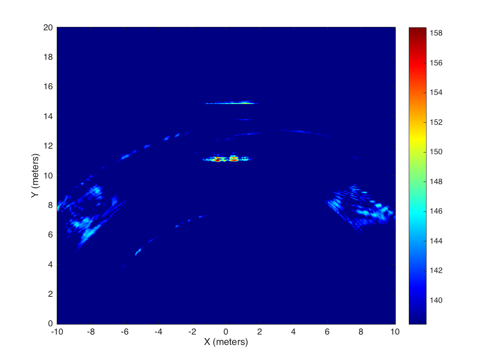

Contents
Initailize Parameters
clear; addpath('../data'); % File parameters rp_file = 'radar_param'; scan_file = 'sundayTestRow1'; % TODO % need additional file printed at start of scan for radar paramenters % (struct) rp = read_parameter_file(rp_file); % scanStartPs = rp.scanStartPs; % maxDistance_m = rp.maxDistance_m; % pulseIntegrationIndex = rp.pii; % transmitGain = rp.transmitGain; % scanIntervalTime_ms = rp.scanIntervalTime_ms; % scanStepBins = rp.scanStepBins; % antennaMode = rp.antennaMode; % User selectable scanStartPs = 17400; % Adjust this to match antenna delay maxDistance_m = 20; % P410 will quantize to closest value above this number pulseIntegrationIndex = 12; % The number of pulses per scan point (2^n) transmitGain = 63; % Tx power (0 for FCC legal) scanIntervalTime_ms = 0; % Time between start of each scan in millisecs ovsFac = 4; % Oversampling factor applied when interpolating rangeScaleFac = 3/2; % Normalize by r^rangeScaleFac ampFilter = 1.5e+7; % Amplitude to filter below % Derived parameters C_mps = 299792458; scanStopPs = scanStartPs + (2*maxDistance_m/C_mps)*1e12; % 1e12 ps in one sec codeChannel = 0; % PN code antennaMode = 3; % Tx: B, Rx: A scanStepBins = 32; scanResPs = scanStepBins*1.907; % 61 ps sampling resolution scanCount = 1; % number of scans per spatial location (2^16-1 for continuous)
Read Radar Data From File
[raw_scan, gps_data] = read_multiscan_file(scan_file);
[raw_scan, gps_data] = read_scan_file(scan_file);
scan_dim = size(raw_scan); % [num_scans bins_per_scan]
Plot Raw Radar Data
plotRawScan(raw_scan(:,:,1), scan_dim, scanResPs, C_mps);
Format Raw Radar Data
rawCollect = formatData(raw_scan, gps_data, scan_dim, ...
scanResPs, C_mps, scanIntervalTime_ms);
Process Raw Radar Data
display_image = true; % display image during processing? % GPS data often sucks. If the test went horrible, set this variable to % override the GPS data. GPS_override = true; scan_incriment = 0; if GPS_override numScans = scan_dim(1); aperture_length = 3.3; % (m) aperture length scan_incriment = aperture_length / scan_dim(1); aperture_len = scan_incriment * numScans; xLoc = linspace(-aperture_len/2,aperture_len/2,numScans); %xLoc = linspace(-(0.015*length(rawCollect))/2,(0.015*length(rawCollect))/2,length(rawCollect)); for i=1:length(rawCollect) % rawCollect{i}.xLoc_m = (-scan_incriment*(i-1)); rawCollect{i}.xLoc_m = xLoc(end-i+1); rawCollect{i}.yLoc_m = 0; rawCollect{i}.zLoc_m = 0; % maybe??? end else gps_data_m = gps_data/1000; x = gps_data_m(:,1); y = gps_data_m(:,2); z = gps_data_m(:,3); xdiff = 25-x(1); ydiff = 25-y(1); zdiff = 0-z(1); x = x + xdiff; y = y + ydiff; z = z + zdiff; %normalize positions of GPS data for i=1:length(rawCollect) rawCollect{i}.xLoc_m = x(i); rawCollect{i}.yLoc_m = y(i); rawCollect{i}.zLoc_m = z(i); end end % create a 3D or 2D image depending on the size of the data set if numel(scan_dim) == 3 img_size = [50 50 50]; scene_size = [20, maxDistance_m, 10]; form_pulse_set = true; image_set = SAR_3D(rawCollect, img_size, scene_size, form_pulse_set); dB = 10; ViewCube(image_set,dB); else % define scene size height = 0.3810; % aperture height sceneSizeX = 20; % sceneSizeY = maxDistance_m; sceneSizeY = 20; sceneSize = [sceneSizeX sceneSizeY height]; % [X Y Z] % create 1D backprojection image of radar scene % processScan(rawCollect, ovsFac, C_mps, rangeScaleFac); % create 2D backprojection image of radar scene image_set = SAR_2D(rawCollect, sceneSize, display_image); end
Processing scans...